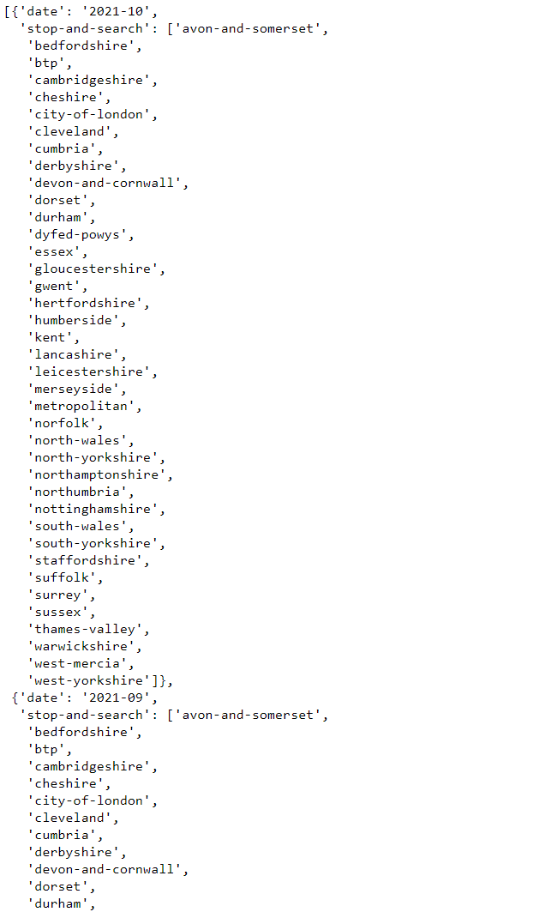

Data Preprocessing with pandas
Contents
Data Preprocessing with pandas¶
To examine the data set we used pandas. The following steps helped us a lot to better understand our dataset and to identify the important variables of the dataset for our machine learning model. You can find more detailed information about pandas at this link: Installation — pandas 1.3.5 documentation
Install pandas with the following command :
conda install pandas
How to get data from api?¶
First of all we would like to fetch the data from the police uk api. The following packages must be imported for this:
[requests](Requests: HTTP for Humans™ — Requests 2.26.0 documentation)
[json](json — JSON encoder and decoder — Python 3.10.1 documentation
import requests
import pandas as pd
from datetime import date
import json
req = requests.get('https://data.police.uk/api/crimes-street-dates')
jsonForces = req.json()
If you would like to have a look on the json, run the following command
jsonForces

Beschreibung fehlt noch
dataJson = []
for month in jsonForces:
if str(month['date']) > '2019-10':
for force in month['stop-and-search']:
reqStopAndSearch = requests.get('https://data.police.uk/api/stops-force?force=' + str(force) + '&date=' + str(month['date']))
if reqStopAndSearch.status_code == 200:
jsonStopAndSearch = reqStopAndSearch.json()
for item in jsonStopAndSearch:
item['force'] = force
dataJson.append(item)
In the next step we put the json on the drive so we can use it in the next script
with open("dataSetForces.json", 'w') as outfile:
json.dump(dataJson, outfile)
First exploration of the dataset¶
To get an better undestanding of the given dataset we ran through the following steps:
Convert json into a pandas dataframe¶
First of all we read the json with pandas in a jupyter notebook
import pandas as pd
import json
# Read json stop and searches
# https://data.police.uk/docs/method/stops-force/
filePath = r'C:/Users/Pasca/OneDrive/Desktop/tensorflow/delateExploration/dataPreprocessing/dataByForce.json'
df = pd.read_json(filePath, orient='columns')
After that, we took a first look at the dataset with the following command
df

Understanding the dataset¶
To have a look how much columns and rows the dataset has, run the following commmand
df.shape
Output: (422520, 17)
Our Dataset has 422520 rows and 17 columns
We then took a closer look at the dataset using df.info(). Here we could see well which columns there are in the dataset and of which data type they are. Furthermore we can get an overview how many non-null values there are per column in the dataset.
# Info about the dataframe
df.info()
It’t also possible to get the columns an there type with the following command
# types of the dataset
df.dtypes
After that we checked if there are any null values in each column
df.isnull().any()

If it’s True the column has null values
In the command above, we saw that the data set contains null values. For this reason we have examined how many values in each column are null
# number of null values in each column
df.isnull().sum()

The data set contains a number of null values. To get a better sense of how much there is, let’s check what percentage of the data has null values per column
# Shows how much % of the data per column is null
df.isnull().sum() / df.shape[0]
The outcome_linked_to_object_of_search has 70% null values. However, this is not further relevant, since the outcome is listed in the column outcome. Although the dataset has some null values, we still have enough after deleting the null values contained in the dataset
Get the Columns of the Dataset with the following comand:
# columns of the dataset
df.columns

In the next step we check how much In the next step we look at how the gender distribution is in the data set
# distribution of gender
df['gender'].value_counts()

As can already be seen in the statistics, significantly more men than women have been stopped.
After that we checked what the distribution of age_range is in the dataset
# age range
df['age_range'].value_counts()
As the statistics show, most of the people stopped are between 18 and 24 years old. Only 208 people under the age of 10 were checked. Whether these are relevant for our evaluation must be checked in the next steps.
# ethnic categories => The self-defined ethnicity of the person stopped
df['self_defined_ethnicity'].value_counts()

# ethnic categories => The officer-defined ethnicity of the person stopped
df.officer_defined_ethnicity.value_counts()

df['outcome'].value_counts()

# How much % is null => only 1,5%
df.outcome.value_counts() / df.type.notnull().sum()
df['object_of_search'].value_counts()

# shows the forces in the dataframe
# force = county
df['force'].value_counts()
Correlation¶
We created a correlation matrix to show correlation coefficients between variables
corrMatrix = df.corr()
Unfortunately, no correlation could be detected in our data set
Cleaning of the dataset¶
After we have examined the dataset we will clean the dataset in the next step
# Cleanup of the DataFrame. All null values in the columns are deleted
df_cleared = df[df.age_range.notna() & df.gender.notna() &
df.officer_defined_ethnicity.notna() & df.self_defined_ethnicity.notna()
& df.object_of_search.notna() & df.location.notna() &
df.legislation.notna()]
To see if there was an action when the person stopped or not we split the ‘outcome’ column into:
action = 1 => person is arrested, gets a ticket etc.
action = 0 => nothing happens
# Split the DataFrame into noAction = 0 and Action = 1
df_noAction = df_cleared[df_cleared.outcome.isin(['A no further action disposal'])]
df_noAction.insert(loc=1, column='action', value=0)
df_Action = df_cleared[df_cleared.outcome.isin(['Arrest', 'Community resolution', 'Summons / charged by post', 'Penalty Notice for Disorder', 'Khat or Cannabis warning', 'Caution (simple or conditional)'])]
df_Action.insert(loc=1, column='action', value=1)
df_cleared = pd.concat([df_noAction, df_Action])
We divide the individuals according to their ethnicity into:
white
black
asian
other ethnicity
mixed ethnicity
# Classify ethnic groups according to 5 groups: white, black, asian, other ethnic group, mixed/multiple ethnic groups
df_clean['self_defined_ethnicity_white'] = df_clean.self_defined_ethnicity.apply(lambda x : x == "White - English/Welsh/Scottish/Northern Irish/British" or x == 'White - Any other White background' or x == 'White - Irish' or x == 'White - Gypsy or Irish Traveller' if isinstance(x, object) else 0)
df_clean['self_defined_ethnicity_black'] = df_clean.self_defined_ethnicity.apply(lambda x : x == 'Black/African/Caribbean/Black British - Any other Black/African/Caribbean background' or x == 'Black/African/Caribbean/Black British - African' or x == 'Black/African/Caribbean/Black British - Caribbean' if isinstance(x, object) else 0)
df_clean['self_defined_ethnicity_asian'] = df_clean.self_defined_ethnicity.apply(lambda x : x == 'Asian/Asian British - Any other Asian background' or x == 'Asian/Asian British - Pakistani' or x == 'Asian/Asian British - Bangladeshi' or x == 'Asian/Asian British - Indian' or x == 'Asian/Asian British - Chinese' if isinstance(x, object) else 0)
df_clean['self_defined_ethnicity_other'] = df_clean.self_defined_ethnicity.apply(lambda x : x == 'Other ethnic group - Not stated' or x == 'Other ethnic group - Any other ethnic group' or x == 'Other ethnic group - Arab' if isinstance(x, object) else 0)
df_clean['self_defined_ethnicity_mixed'] = df_clean.self_defined_ethnicity.apply(lambda x : x == 'Mixed/Multiple ethnic groups - Any other Mixed/Multiple ethnic background' or x == 'Mixed/Multiple ethnic groups - White and Black Caribbean' or x == 'Mixed/Multiple ethnic groups - White and Asian' or x == 'Mixed/Multiple ethnic groups - White and Black African' if isinstance(x, object) else 0)
After that we changed the type of the colums
# change type of columns
df_clean.involved_person = df_clean.involved_person.astype(int)
df_clean.self_defined_ethnicity_white = df_clean.self_defined_ethnicity_white.astype(int)
df_clean.self_defined_ethnicity_black = df_clean.self_defined_ethnicity_black.astype(int)
df_clean.self_defined_ethnicity_asian = df_clean.self_defined_ethnicity_asian.astype(int)
df_clean.self_defined_ethnicity_other = df_clean.self_defined_ethnicity_other.astype(int)
df_clean.self_defined_ethnicity_mixed = df_clean.self_defined_ethnicity_mixed.astype(int)
df_clean = df_clean.drop('self_defined_ethnicity', axis=1)
Now we can delete alls not needed columns
# delete columns not needed
df_clean = df_cleared.drop(['outcome','outcome_linked_to_object_of_search', 'datetime', 'removal_of_more_than_outer_clothing', 'outcome_object', 'location'], axis=1)
In order to process the data in a model, the data must be encoded. For this we use the following methods:
pd.get_dummies
With this method all feature keys are encoded
LabelEncoder
With this method the label key is encoded
df_dummies = pd.get_dummies(df_clean, columns=['gender', 'legislation', 'officer_defined_ethnicity', 'type', 'object_of_search', 'force' ])
from sklearn.preprocessing import LabelEncoder
labelEncoder = LabelEncoder()
labelEncoder.fit(['10-17', '25-34', 'over 34', '18-24', 'under 10'])
df_encoded = df_dummies
df_encoded.age_range = labelEncoder.fit_transform(df_dummies.age_range)